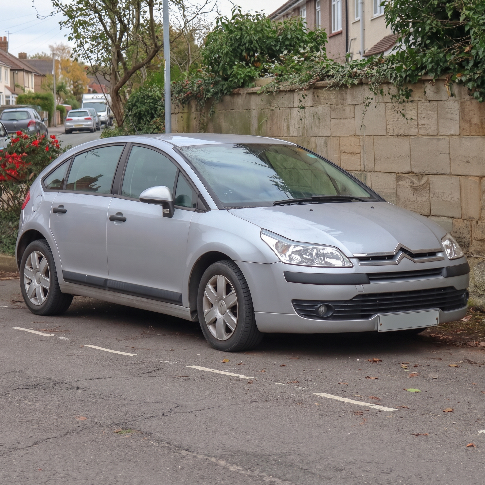

Citroën C4 · 2004 à 2010
Catalogue
Versions, finitions et motorisations de la C4 première génération, en un coup d’œil.
Les versions
Deux carrosseries.
- 2carrosseries
- 17finitions
- 3pôles de gamme
- 12motorisations

C4 Berline 5 portes
10 finitions, de la C4 d’entrée de gamme à la C4 Exclusive, plus une gamme professionnelle avec l’Auto-École.
- 10 finitions
- 3 pôles
- 11 motorisations

C4 Coupé 3 portes
7 finitions dont un pôle Dynamique avec les VTR et VTS, jusqu’au 2.0i 16V 180 ch réservé à la VTS.
- 7 finitions
- 3 pôles
- 11 motorisations
Les finitions
Classées par pôle, du niveau le plus simple au plus complet. Chaque carte ouvre la fiche détaillée.
Berline 5 portes
PôleClassique
PôleSérie spéciale
PôleProfessionnel
Coupé 3 portes
PôleClassique
PôleSérie spéciale
Les motorisations
Puissance, vitesse maximale et consommation de chaque version.
| Motorisation | Puissance | Vitesse max. | Conso. mixte | Carrosserie |
|---|---|---|---|---|
| Essence | ||||
| BVM5 1.4i 16V 90 | 90 ch | 182 km/h | 6,5 l/100 km | BerlineCoupé |
| BVM5 1.6i 16V 110 | 110 ch | 194 km/h | 7,1 l/100 km | BerlineCoupé |
| BVA4 1.6i 16V 110 | 110 ch | 188 km/h | 7,6 l/100 km | BerlineCoupé |
| BVM5 2.0i 16V 140 | 140 ch | 207 km/h | 7,6 l/100 km | BerlineCoupé |
| BVA4 2.0i 16V 140 | 140 ch | 206 km/h | 8,1 l/100 km | BerlineCoupé |
| BVM5 2.0i 16V 180 | 180 ch | 227 km/h | 8,4 l/100 km | BerlineCoupé |
| Turbo Diesel | ||||
| BVM5 1.6 HDi 92 | 92 ch | 180 km/h | 4,7 l/100 km | BerlineCoupé |
| BVM5 1.6 HDi 110 | 110 ch | 192 km/h | 4,5 à 4,8 l/100 km | BerlineCoupé |
| BVM5 1.6 HDi 110 FAP | 110 ch | 192 km/h | 4,5 à 4,8 l/100 km | BerlineCoupé |
| BMP6 1.6 HDi 110 FAP | 110 ch | 192 km/h | 4,5 à 4,8 l/100 km | BerlineCoupé |
| BVM6 2.0 HDi 140 | 140 ch | 207 km/h | 5,3 l/100 km | BerlineCoupé |
| BVA6 2.0 HDi 136 | 136 ch | 206 km/h | 6,6 l/100 km | BerlineCoupé |
- BVM5 / BVM6
- Boîte de vitesses manuelle, 5 ou 6 rapports
- BVA4 / BVA6
- Boîte de vitesses automatique, 4 ou 6 rapports
- BMP6
- Boîte manuelle pilotée, 6 rapports
- FAP
- Filtre à particules
À noter : deux autres 2.0 HDi sont documentés mais ne figurent pas dans le tableau, car la source ne donne ni vitesse maximale ni consommation. Le 2.0 HDi 90 a été proposé sur le marché argentin, et le 2.0 HDi 110 FAP (107 ch) est référencé par Wikipédia. Leur fiche est détaillée dans la section « Autres 2.0 HDi » de la page Options et packs.
Disponibilités relevées dans les archives Citroën France. Vitesses maximales et consommations (cycle mixte) d’après Wikipédia, « Citroën C4 première génération ». Visuels et descriptifs non contractuels.